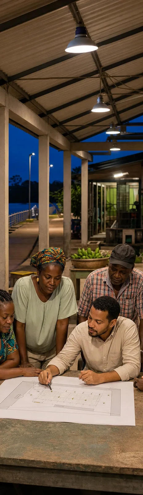

Espacio
¿Qué territorio, ruta, escenario, vía o comunidad necesita iluminarse?
Alumbrado público y territorial
La orientación comienza por comprender el espacio, sus usuarios, los recorridos, la actividad nocturna, el entorno y la decisión pública o técnica que debe tomarse.
Imagen conceptual aprobada · no corresponde a un proyecto real
Preguntas de entrada
¿Qué territorio, ruta, escenario, vía o comunidad necesita iluminarse?
¿Quién utiliza el lugar, para qué y bajo qué condiciones?
¿Se requiere planificar, diagnosticar, diseñar, revisar, mejorar o verificar?
¿Qué inventarios, diseños, instalaciones, antecedentes y actores existen?
Territorio y participación

Comunidades, asociaciones y actores locales ayudan a revelar recorridos, usos, restricciones y prioridades.
Imagen editorial conceptual. Representa una aplicación posible y no evidencia de un proyecto ejecutado por MVH.
Alcance responsable
Según la necesidad, el servicio puede requerir revisión documental, reconocimiento del territorio, inventario, análisis de uso, criterios de diseño, revisión técnica o verificación. La competencia y los aliados se validan antes de confirmar el alcance.
Siguiente paso
Una orientación inicial ayuda a identificar la información necesaria y el servicio pertinente.